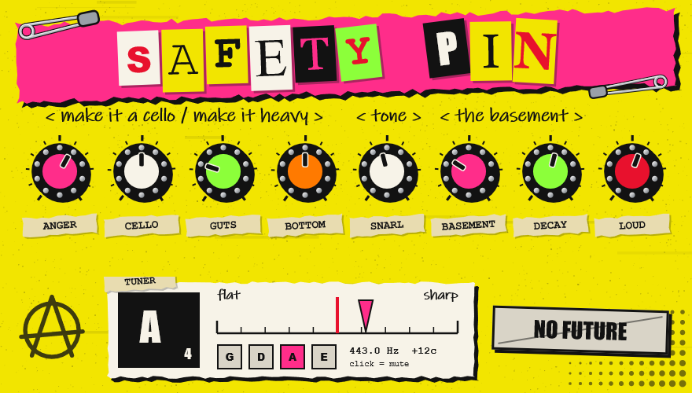

Standalone
- Unzip, run
Safety Pin.exe. - Options > Audio/MIDI Settings: ASIO, your interface (e.g. Focusrite USB ASIO), the input your violin is in, buffer 64-128.
- Click Unmute Input. Headphones or an amp, not a mic near the speakers.
electric violin distortion
A fat, bassy fuzz made for electric violin.
Turn it into a cello. Add a sub two octaves down. Throw it in the basement. Tune up without leaving the plugin.
free · Windows 10/11 64-bit · VST3 + standalone app · v0.1.0

go on, turn them (they don't make noise here)
How much distortion.
A real octave down. At 10 you only hear the octave: a cello.
Synth sub bass, two octaves down.
Bass boost after the fuzz, up to +14 dB.
Tone, dark to bright.
Plate reverb mix.
How long the reverb rings.
Output level.
+12 dB of drive and hard clipping. Press it. You know you want to.
Standard violin tuning: G D A E, A = 440 Hz. It listens to your clean signal, before any fuzz, octave or reverb, so the effects never confuse it.
Note, cents and the nearest string. Goes green when you're in tune. Click it to mute the output while you tune.
Safety Pin.exe.Safety Pin.vst3 to C:\Program Files\Common Files\VST3.The files aren't code-signed, so SmartScreen may warn you. Click More info > Run anyway. Only download it from this page or the GitHub release.
Works on guitar and viola too, but the octave and tuner only track from about 150 Hz up, and one note at a time.